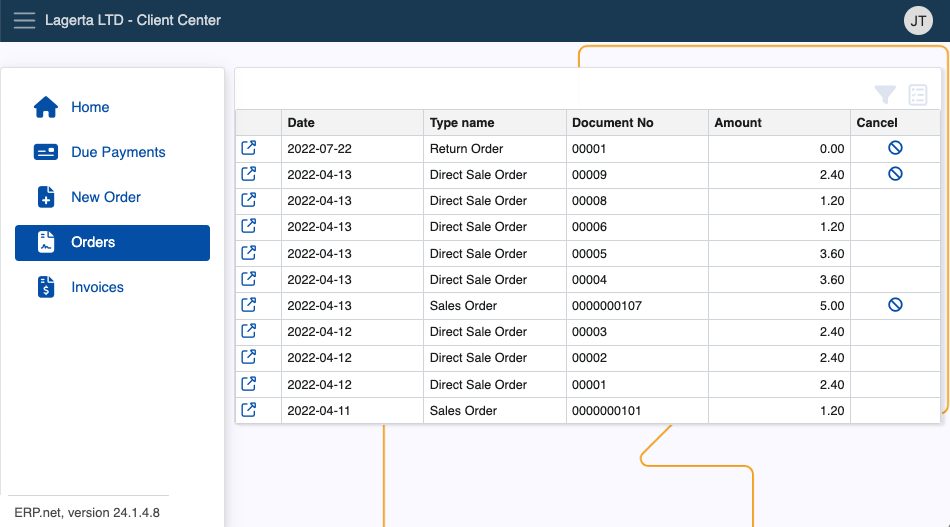

Client Center
The Client Center allows Erp.Net clients to assist their own clients by allowing them to chat with Customer Support, review due payments, access and download invoices, and create sales orders. It’s best used to provide faster support and increase speed of new orders.
Currently, Client Center platforms are more suitable for businesses rather than individual users.
You can build and host a CC instance from your global website environment, and access it using a custom relative url.
Features and structure
Within the Client Center, users with appropriate permissions can see and interact with four different panels.
Each Client Center panel works with accurate and simplified data to implement a pleasant and up-to-date platform experience.
Whether they use the shortcuts or the expandable menu on the left side of the screen, clients are able to look at all of their due payments, sales orders and invoices on-demand.
Panels
Home offers a direct communication channel and access to other pages.
Using the chat panel, clients can reach out to a representative regarding any issue or question they're having.
Due Payments contains a list of your due payments, available to be sorted.

Orders contains a list of your current orders, with the ability to preview and sort them.

Invoices keeps all of your invoices for completed orders.
Note
Depending on your business' size and reach, you can create and manage multiple Client Centers.
This could be useful for departments dealing with unique sets of tasks and issues, as their customized version of the Client Center will remain completely tailored to the users they’re serving.
Creating sales orders
The Client Center gives users the ability to create new sales orders with just the click of a button.
This feature is disabled by default for security reasons. Access should be granted only when it's necessary.
For more information on how to define and set up Client Center, please refer to our step-by-step guides and the reference
Actions
Users are able to perform a couple of actions from within the Client Center to enhance their experience.
Additional columns can be added to provide more information for due payments, past orders and invoices.
In the Orders page, already issued sales orders from the Client Center can be cancelled before they're finalized.
Generated invoices for any orders can be downloaded and previewed outside of the platform.
Note
The screenshots taken for this article are from v24 of the platform.